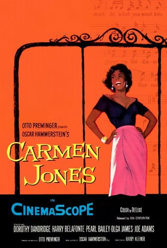
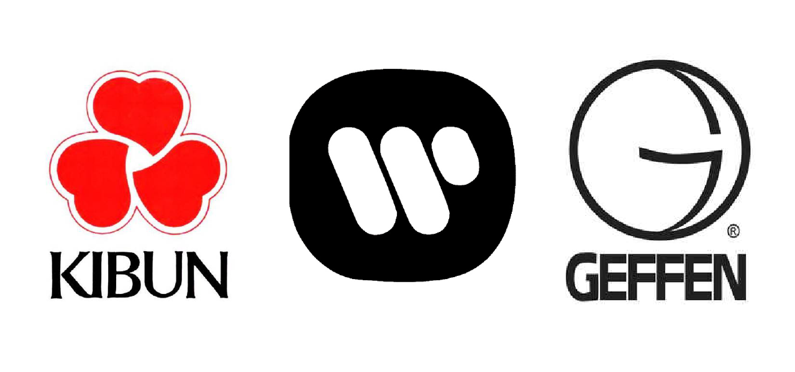
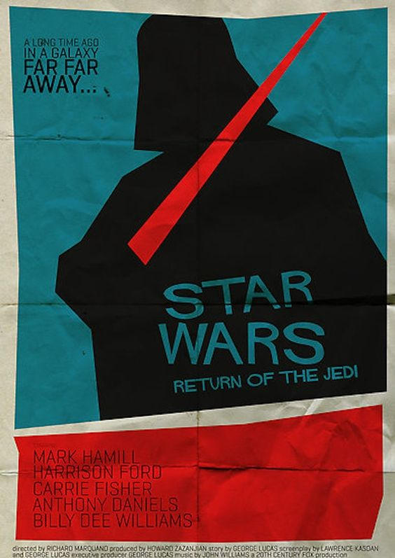
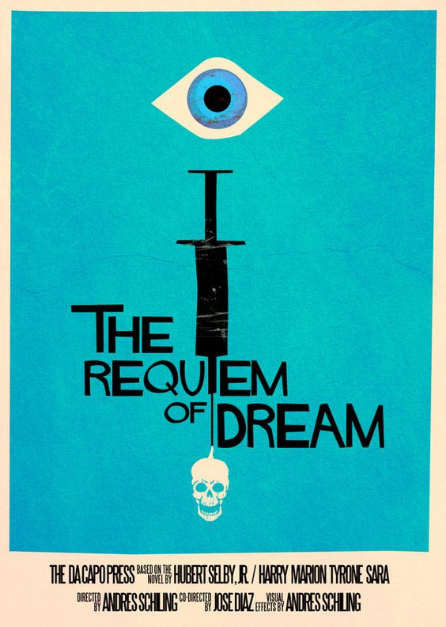
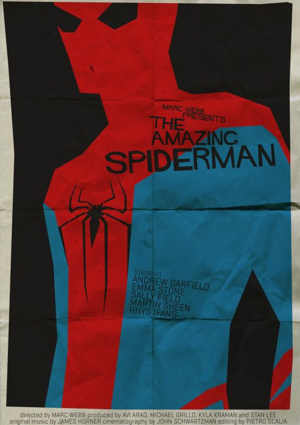
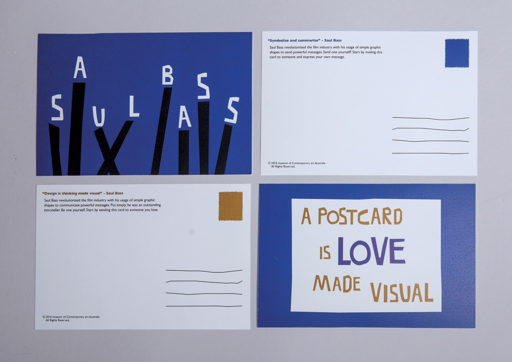
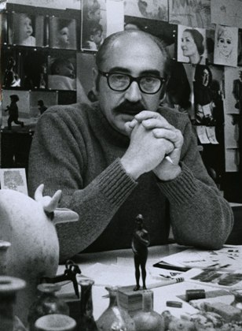

Getting his Start
Bass was born in 1920 in New York City, to Jewish immigrants. A creative child, he drew constantly. Something he promoted heavily throughout his life. Growing up in the Depression, he had to leave school at 16 to work in an advertising agency. During this time he attended night classes at the Art Students League where he began studying under György Kepes, a master of the functional Bauhaus aesthetic. Kepes focused Bass's ideas about modernism, psychology and the social responsibility of designers, helping shape Bass into one of the most articulate members of his profession.In the 1940s, Bass left New York for LA. Bass would soon turn his experience in advertising into something much more – design.
"Design is thinking made visible."
Cinematic Revolution
Bass had worked mostly in advertising until his first major break: a poster for the 1954 film, Carmen Jones. The filmmakers were so impressed by his poster work, they invited him to design the title credits. This turned out to be a game-changing decision for the industries of film and design.
The Poster that changed it all
Bass stepped up the sophistication of movie posters with his distinctive minimal style: imagery that mimicked cut papers and simple colour palettes. This can be seen in many pieces of his work. Bass completely revolutionized the role of title credits in films. Traditionally, credits were static and drab. They were considered so unimportant, they would actually be projected onto the closed curtains.
Bass, however, was committed to injecting life into these graphics, making them as much a part of the cinematic experience as anything else. He aimed to "symbolise and summarise" the movie in the credits via imagery and text. His signature “kinetic type” became part of design history as they dashed and moved across the screen.
Titles became a spectacle to be seen. Film reels with Bass credits were delivered to movie theaters along with a note: “projectionist – pull curtain before titles.”
During my research I watched the documentary 'Bass on Titles' (2006) It was here that I learnt that Bass approached each film title with the same three-point approach he would use with any of his design projects:
- Saturating himself with knowledge of the company.
- Understanding the vision of the company.
- Never trying to symbolize a point of view.
These are the 3 points he lived by.
His approach can be seen brilliantly in his next project for Otto Preminger, for the film 'The Man With the Golden Arm'. Preminger’s vision was to represent the reality of drug addiction without judging the morals of the main character. Hollywood often represented addicts as drug fiends and Otto wanted to challenge that perception. It was a vision that Bass knew would challenge the sensibilities of the audience so he sandwiched the credits between a series of straight and off-kilter lines. By the time they came together to form the foreboding jagged arm, which Saul Bass regarded as an expression of the "disjointed, jarring existence of the drug addict," the audience knew they were about to witness a film that would step over the lines of traditional values. Saul Bass knew his work could "set up the mood and texture of the film." And it did.
The Experimental Phase
Many people regard 'the Man with the Golden Arm' as the peak of Bass’ career when it was really only the first of a series of film titles in the 50s and 60s that would increasingly stretch the boundaries of both technology and art. Enter: The Experimental Phase.
Bass' title design portfolio included:
- A 7-minute end credit for 'Around the World in Eight Days' (1956.) The extravagance of this piece mirrors the films extravagant cast of A-list stars and it's three-hour running time.
- The iconic titles for Alfred Hitchcock's 'Vertigo' (1958) which took the audience through a woman’s eye and into the hypnotic swirl of colors that represented her mind.
- A live action piece which further developed the idea of the film, 'The Big Country' (1958), as a mini story. Bass' piece depicted a family’s journey to the Wild West and the sequence acted as a prologue to the rest of the action.
- The title credit sequence of 'West Side Story' (1961) which acted as an epilogue. Bass and the director Robert Wise thought this would lessen the impact of the film's tragic ending.
Logos made to last
“If I do my job well, the identity program will also clean up the image of the company, position it as being contemporary and keep it from ever looking dated.”
The average lifespan of a Saul Bass logo is 34 years. 34 years. That's impressive. Some of his work has yet to be replaced, like the absolutely brilliant designs for Kibun (1964), Warner Communications (1972) and Geffen Records (1980). Bass set out to insure this would be the case through solid, thoughtful and timeless design.
Even some of his designs that have been tweaked or re-branded are still key pieces of design history and are viewed as vicious examples of great graphic design.
"The ideal trademark is one that is pushed to its utmost limits in terms of abstraction and ambiguity, yet is still readable. Trademarks are usually metaphors of one kind or another. And are, in a certain sense, thinking made visible."
The Next Big Thing
As many do halfway through their career, Saul Bass wanted something more. He began looking for a more creative outlet for his talents than the lucrative commissions for trademarks, corporate logos, letterheads, TV commercials and packaging for which he was in constant demand. The answer proved to be film-making: imaginative documentaries, a single feature film (the rarely seen SF picture Phase IV, 1979), and of course he continued to create title sequences for other directors' work as explored before. Bass continued working throughout film, graphic design and TV and created the ultimate legacy for himself working until his death in 1996. Many view Bass as the most important graphic designer of the 20th century.
His Influence Today
A mammoth name must have a mammoth legacy. His influence today has cast a wide net. Every movie you watch that has creative credits - thank Saul Bass. His influence can also be seen very clearly in the work of many contemporary artists. Steven Spielberg's 'Catch Me If You Can' shows clear links to Saul Bass' graphic style as does 'Dexter' the popular TV show.
Title sequences such as The Walking Dead and The X-Files set the mood for what is to come. An idea that Saul Bass first established. To us, it seems like common sense but only because nearly every movie and TV-show does it in modern times. Our common sense has been engrained in us due to Saul Bass.
Likewise Saul Bass was also known for using titles sequences of epilogues and prologues helping to establish the story, the world and the characters before it has even begun. The most prevalent contemporary example of this is the Game Of Thrones title sequence which shows us the known world, focuses in on the locations of that particular episode while also communicating the progressive rise and fall of each house as it plays out on the mechanical game board.
Allstate Insurance have even got in on the Saul Bass legacy with an ad campaign designed by Leo Burnett/Chicago. It sports uneven colours and graphic shapes that mimic the way Bass would utilize graphics.
And of course, the ultimate sign of fame and legacy - a Google Doodle. For his 93rd Birthday on May 8th 2008 Google created a Bass homage displaying his best-loved works. The doodle can be viewed here. It was designed by Matthew Cruickshank who said "I've always been interested in the work of Saul Bass and was delighted to get the opportunity to celebrate his birthday on the Google homepage. From the outset, I wanted to celebrate a number of his film credits in succinct succession, as well as a nod in the direction of his poster work. Film rights can be problematic so I wasn't completely sure of the order of cutting, but as it turned out every studio was a pleasure to work with. Corresponding with Jennifer Bass was inspirational and led to hearing that Saul Bass was a Dave Brubeck fan." The Google Doodle was then put to the sound of a Dave Brubeck track which matched perfectly with the animation. The fact that the Dave Brubeck and every studio was happy to help Cruickshank shows just how well-respected Saul Bass is and how his work still has an impact today.
I have noticed Bass' direct influence on modern day pop culture. One of my favourite movies of all time (actually from when I was 2 in 2001) is Monsters Inc. While investigating and admiring Bass' work I immediately though of the title sequence for Monsters Inc. The distinct style shows large amounts of Bass influence. From the oddly cut paper-like shapes to the foreboding of the story that is to become. It is clearly a bow to Saul Bass.
Furthermore, Bass has inspired a generation of young designers when creating their own pieces of art. Designers Andres Schiling and Alex Clark both created posters in the style of Bass, as seen below.
- 
Alex Clark's Star Wars poster
- 
Andres Schiling's poster for his favourite movie
- 
Alex Clark's Spiderman poster
Ulrika Johnson's Bass inspired work is one of the most noteable salutes to Bass. A student brief in the Graphic Design course at Shillington College was to create a concept for an exhibition of Saul Bass’s art, including exhibition tickets and souvenirs for the Museum of Contemporary Art, Australia.
One of Ulrika's posters
-
Ulrika's Popcorn Boxes which are a play on Bass' famous sayings and would be used at Bass' favourite place - the movies!
- 
One of Ulrika's proposed souvenirs
Ulrika's work features the style of Bass, some of his most famous quotes, references to his most well-known work such as the eye which is seen in Alred Hitchcock's 'Vertigo' and the globe from the titles of 'It's a Mad, Mad, Mad, Mad World.' I love these pieces as they show off Bass' work and life while still having their own unique identity.
Bass died in Los Angeles on April 25, 1996, of non-Hodgkin's lymphoma. His wife-and creative partner, Elaine Makatura, survived him. The couple had been married for 35 years; they had two children, Jennifer and Jeffrey. His daughter has written a biography which displayed and analysed Bass' work 'Saul Bass: A Life in Film and Design.'
References
- 'Saul Bass: The man who changed graphic design' by Alex Bigman
- 'Saul Bass: A Life in Film and Design by Jennifer Bass and Pat Kirkham' Book Review by Philip French in 'The Guardian'
- Christian Annyas's Logo Design Review
- Saul Bass: A Life in Film and Design Hardcover – November 9, 2011 by Jennifer Bass
- Simon Arms' Showcase of Bass
- Alex Darling's Essay on Bass
- Ulrika Johnson's Work for the Museum of Contemporary Art Australia'
- The Google Doodle
- Encyclopedia of World Biography
- Star Wars Movie Posters in the style of Saul Bass
- Modern Designs Inspired by Saul Bass
- 'Saul Bass: Title Champ' documentary